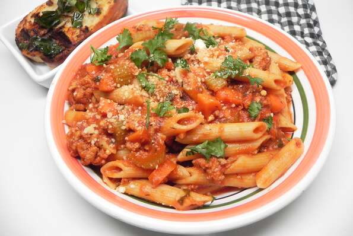

Lasagna Recipe

Description
This is a recipe for a bolognese dish
Ingredients
- 2 tablespoons olive oil
- 1 pound ground turkey
- ¾ cup chopped carrots
- ½ cup chopped onion
- ½ cup chopped celery
- 4 cloves garlic, minced
- 1 tablespoon ground thyme
- 1 pinch red pepper flakes
- ¼ cup dry white wine
- 2 cups tomato sauce
- ½ cup tomato juice
- 2 tablespoons dried parsley
- 1 (8 ounce) package penne pasta
- ½ cup grated Parmesan cheese
- salt and ground black pepper to taste
Steps
-
Heat oil in a large skillet over high heat. Add ground turkey and cook
until well browned, 5 to 7 minutes. Add carrots, onion, celery, garlic,
thyme, and red pepper flakes. Cook and stir until vegetables are tender,
5 to 10 minutes. Drain and discard grease, if necessary. Add white wine;
cook and stir until almost completely evaporated, about 5 minutes. Add
tomato sauce, tomato juice, and parsley. Reduce heat and simmer until
sauce reaches a thick consistency, about 20 minutes.
-
Bring a large pot of lightly salted water to a boil. Add penne and cook,
stirring occasionally, until tender yet firm to the bite, about 11
minutes. Drain and return to the pot. Add the sauce and Parmesan cheese;
mix well. Season with salt and pepper.